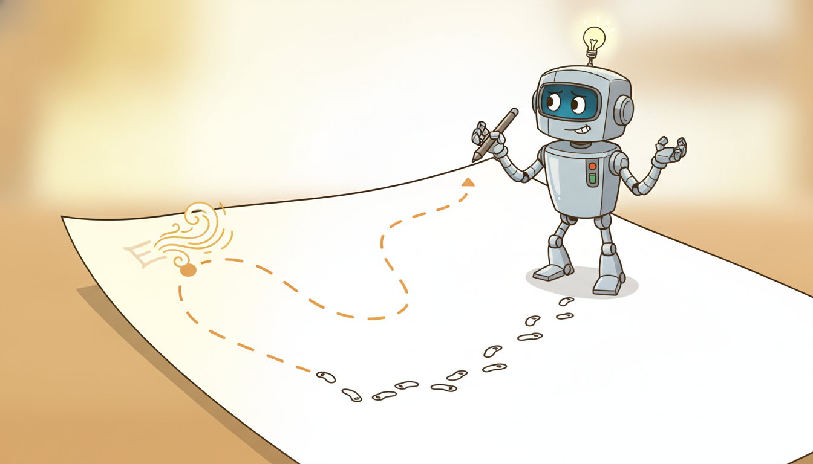
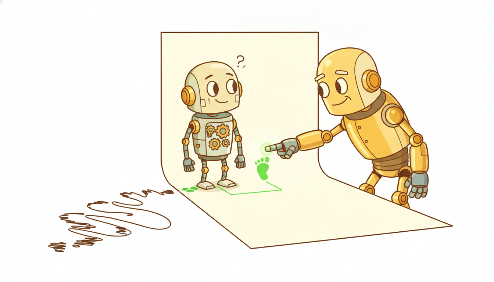

"I watched the expert a hundred thousand times and learned to copy every move on the lines they drew. Then one gust of wind nudged me half a step off the page, into a margin no expert ever wrote in, and I had no idea what to do there, so I drifted further, and the further I drifted the stranger the world became, until I was improvising fluently in a country whose language I had never been taught."
A Student Policy Copying the Expert Until It Wanders Off the Page
When you cannot write down a reward but you can show the machine what good behavior looks like, you do imitation learning: turn a stack of expert demonstrations into a policy that reproduces them. The simplest recipe, behavioral cloning, is pure supervised learning: treat each demonstrated $(\text{state}, \text{action})$ pair as a labeled example and fit $\pi_\theta(a \mid s)$ to predict the expert's action. It is a few lines of code and often works astonishingly well, until it does not. The failure is structural and it has a name we have met before: distribution shift. A cloned policy is trained only on states the expert visited, but at deployment its own small mistakes carry it into states the expert never saw, where it is uncalibrated, makes larger mistakes, and drifts further still. Errors compound, and the gap from the expert grows not linearly but quadratically in the horizon. DAgger (Dataset Aggregation) is the fix that follows directly from naming the disease: roll out the learner, ask the expert what it should have done at the states the learner actually visited, add those labels, and retrain, iterating until the learner's own state distribution is covered. This section derives behavioral cloning and its compounding-error bound, builds the DAgger loop from scratch on a solved gymnasium task, reproduces it with the imitation library in a fraction of the lines, and quantifies error compounding numerically. You leave able to clone a policy, recognize when cloning will betray you, and repair it with interactive expert labeling.
In Section 27.2 we studied optimal control, where a known dynamics model and an explicit cost let us compute the best action by solving an optimization. That setting is a luxury: it assumes you can write down what "good" means as a cost function. This section confronts the common case where you cannot. Nobody can hand you a closed-form reward for "drive like a careful human", "suture like a skilled surgeon", or "operate this plant like the veteran on the night shift", yet in every one of those domains you can collect something almost as good: recordings of the expert doing the task. Imitation learning is the family of methods that converts those recordings into a policy, and behavioral cloning is its first and simplest member. We use the unified notation of Appendix A: $s$ for state, $a$ for action, $\pi_\theta(a \mid s)$ for the learner's parameterized policy, $\pi^\star$ for the expert.
The reason imitation deserves its own treatment, rather than a footnote to reinforcement learning, is that it sidesteps the hardest part of RL entirely. Reinforcement learning needs a reward signal and then spends enormous sample budget exploring to discover which actions earn it. Imitation needs no reward and no exploration: the expert has already done the credit assignment by demonstrating good behavior, and the learner only has to copy. When demonstrations are available, imitation can be orders of magnitude more sample efficient than learning from reward. The catch, the subject of most of this section, is that "just copy" is subtler than it sounds, because a policy is not a static function to be regressed but a controller embedded in a feedback loop, and that loop punishes the small errors a static regressor would shrug off.
The four competencies this section installs are these: to formulate behavioral cloning as supervised learning of $\pi_\theta(a \mid s)$ on expert demonstrations and write its objective; to explain the compounding-error and distribution-shift mechanism that makes a perfectly-trained clone fail at deployment, and to state the quadratic-in-horizon error bound; to implement the DAgger loop, which queries an interactive expert on the learner's own visited states, and to understand why that on-policy labeling repairs the shift; and to know when behavioral cloning and DAgger suffice versus when you must reach for the inverse reinforcement learning of Section 27.4. These are the load-bearing skills for every demonstration-driven agent in this book.
1. Imitation Learning: Learning From Demonstrations When Reward Is Hard Beginner
The premise of imitation learning is a mismatch between two things that are easy and two things that are hard. It is often hard to specify a reward function that captures what we want and hard to explore efficiently enough to learn from it, yet it is often easy to recognize good behavior when we see it and easy to collect examples of an expert producing it. Imitation learning exploits exactly that asymmetry: rather than defining good behavior analytically and searching for it, we collect demonstrations of good behavior and learn to reproduce them directly.
Make the setting precise. An expert, whose policy we call $\pi^\star$, interacts with an environment and produces trajectories. A demonstration dataset is the collection of state-action pairs along those trajectories,
$$\mathcal{D} = \big\{ (s_i, a_i) \big\}_{i=1}^{N}, \qquad a_i = \pi^\star(s_i) \text{ (or sampled from } \pi^\star(\cdot \mid s_i)\text{)},$$where the states $s_i$ are distributed according to $d_{\pi^\star}$, the distribution of states the expert visits. The goal is to recover a policy $\pi_\theta$ that behaves like the expert. Crucially, we are given the actions the expert took but not any reward; the demonstrations are the entire supervisory signal. This is what separates imitation learning from the reinforcement learning of Chapter 24 and Chapter 25, where a scalar reward is the signal and there are no demonstrations at all.
The domains where this trade is worth making share a signature. In autonomous driving, a precise reward balancing safety, comfort, legality, and progress is notoriously hard to write, but millions of miles of human driving logs are easy to record. In robotic surgery and teleoperation, "good" is a tacit skill no engineer can formalize, yet a master surgeon can demonstrate it. In industrial operations, the veteran operator's judgment about when to throttle a process is not in any manual, but their control actions can be logged. In each case the reward is hard and the demonstrations are available, and imitation learning is the natural first tool. Figure 27.3.1 frames the choice.
Reinforcement learning carries two heavy costs: you must specify a reward, and you must explore to discover which actions earn it. Imitation learning pays neither. The expert's demonstrations already encode good behavior, so the reward is implicit and the exploration is already done; the learner's only job is to reproduce the mapping from states to expert actions. This is why, when demonstrations exist, imitation is dramatically more sample efficient than learning from scratch. The price, which the rest of this section is about, is that copying a policy is not the same as copying a function: the policy lives inside a feedback loop, and the loop turns small copying errors into large behavioral failures.
2. Behavioral Cloning: Supervised Learning of a Policy, and Its Hidden Trap Beginner

Behavioral cloning takes the most direct possible reading of "learn from demonstrations". If the dataset is a pile of $(s, a)$ pairs and we want a function from states to actions, then this is just supervised learning, with states as inputs and expert actions as labels. We fit $\pi_\theta$ by maximizing the likelihood of the demonstrated actions, or equivalently minimizing a supervised loss against them:
$$\theta^\star = \arg\max_\theta \; \mathbb{E}_{(s,a) \sim \mathcal{D}} \big[ \log \pi_\theta(a \mid s) \big] \;=\; \arg\min_\theta \; \mathbb{E}_{(s,a) \sim \mathcal{D}} \big[ \ell\big(\pi_\theta(s), a\big) \big],$$where $\ell$ is cross-entropy for discrete actions or squared error for continuous ones. That is the entire algorithm: collect demonstrations, then run your favorite supervised learner. There is no environment in the loop during training, no reward, no exploration, nothing that distinguishes this from training an image classifier except that the inputs are states and the labels are actions. Its simplicity is genuine and its successes are real: behavioral cloning is the workhorse behind the first stage of many production driving stacks and the supervised-fine-tuning stage of instruction-tuned language models, which is behavioral cloning of human-written responses.
And yet behavioral cloning hides a trap that no amount of training data on the expert's distribution can spring. The trap is that supervised learning assumes the training and test inputs come from the same distribution, and for a policy that assumption is false by construction. During training the states come from $d_{\pi^\star}$, the distribution the expert visits. At deployment the states come from $d_{\pi_\theta}$, the distribution the learner visits, and these two differ the moment the learner makes its first mistake. A clone that is even slightly imperfect will occasionally pick an action the expert would not have, which moves it to a state slightly off the expert's path, a state that was rare or absent in training, where the clone is less certain and more likely to err again, which moves it further off, and so on. This is precisely the distribution shift we met in the offline-reinforcement-learning setting of Section 26.2, where a policy trained on one data distribution is evaluated under the different distribution it induces; here it is the central obstacle rather than a side effect.
The cost of this shift is not a constant tax; it grows with the horizon, and the growth is the punchline. The classic analysis (Ross and Bagnell, 2010; the quadratic bound is sharpened in Ross, Gordon, and Bagnell, 2011) makes it quantitative. Suppose the cloned policy disagrees with the expert with probability at most $\epsilon$ on states drawn from the expert's own distribution, the very best a supervised learner could promise. One might hope the total cost over a horizon $T$ is then bounded by $\epsilon T$, the per-step error times the number of steps. It is not. Because each mistake moves the learner to a worse state where future mistakes become more likely, the expected total cost of behavioral cloning grows as
$$J(\pi_\theta) - J(\pi^\star) \;=\; O\!\big(\epsilon\, T^{2}\big),$$quadratic in the horizon rather than linear. The extra factor of $T$ is the signature of compounding: an error early in an episode does not just cost once, it poisons the rest of the episode by displacing the learner into unfamiliar territory. For long-horizon tasks this quadratic blow-up is exactly why a clone that scores beautifully on held-out demonstration data can still drive off the road, and it is the precise failure DAgger is engineered to remove. This is the same compounding-error theme that haunts autoregressive forecasting (a wrong prediction feeds back as a wrong input for the next prediction) which we first met in Chapter 9; in control it is sharper because the errors steer the very state distribution you are evaluated on.
Take a clone with per-step error $\epsilon = 0.01$ on the expert's distribution (it matches the expert on 99 percent of demonstrated states) and a task of horizon $T = 200$. The optimistic linear estimate of accumulated cost is $\epsilon T = 0.01 \times 200 = 2$ units. The compounding bound says the real cost scales as $\epsilon T^2 = 0.01 \times 200^2 = 0.01 \times 40000 = 400$ units, two hundred times larger. The intuition in numbers: there is roughly a $1 - (1 - 0.01)^{200} \approx 0.87$ chance of at least one off-distribution excursion somewhere in the episode, and once the learner leaves the expert's support its per-step error is no longer $0.01$ but something much larger and unbounded, because the clone was never trained there. A 99-percent-accurate clone is not a 99-percent-good controller; the missing one percent gets amplified by the horizon. This single calculation is the whole case for moving from behavioral cloning to DAgger.
The reason behavioral cloning fails where ordinary supervised learning succeeds is that a classifier's mistakes do not change its future inputs, but a policy's mistakes do. Each action the learner takes determines the next state it sees, so errors are not independent draws from a fixed test set, they are correlated steps of a walk that the errors themselves steer off the training distribution. Independent-and-identically-distributed supervised theory simply does not apply to a closed loop. Every method in this section and the next is, at bottom, a way to make the policy's training distribution match the distribution its own actions induce, so that the i.i.d. assumption is restored. Behavioral cloning ignores the loop; DAgger closes it.
3. DAgger: Labeling the Learner's Own States Intermediate

If the disease is that the learner is tested on states it was never trained on, the cure is to train it on exactly those states. That is the one idea behind DAgger, short for Dataset Aggregation (Ross, Gordon, and Bagnell, 2011). Behavioral cloning trains on the expert's state distribution and then deploys on the learner's; DAgger iteratively drags the training distribution toward the learner's by collecting fresh labels precisely where the learner goes.
The mechanism is an alternation between rollout and labeling. Run the current learner in the environment to collect the states it visits, then ask the expert what the correct action would have been at each of those states, add these new $(s, \pi^\star(s))$ pairs to the dataset, and retrain on the aggregated whole. The states now include the learner's own off-distribution excursions, paired with the expert's corrective answers, so the next iteration's policy knows what to do in those previously-unseen regions. Repeat, and the learner's visited distribution and its training distribution converge. The algorithm in pseudocode:
$$ \begin{aligned} &\textbf{DAgger} \;:\; \mathcal{D} \leftarrow \varnothing,\quad \pi_1 \leftarrow \text{behavioral clone of expert demos} \\ &\textbf{for } i = 1, 2, \dots, K: \\ &\quad \text{let } \pi_i^{\beta} = \beta_i\,\pi^\star + (1 - \beta_i)\,\pi_i \quad \text{(optionally mix in the expert)} \\ &\quad \text{roll out } \pi_i^{\beta} \text{ to collect states } \{s\} \sim d_{\pi_i^{\beta}} \\ &\quad \text{query expert for labels: } \mathcal{D}_i = \{(s,\ \pi^\star(s))\} \\ &\quad \mathcal{D} \leftarrow \mathcal{D} \cup \mathcal{D}_i \quad \text{(AGGREGATE, never discard)} \\ &\quad \pi_{i+1} \leftarrow \arg\min_\theta \; \mathbb{E}_{(s,a)\sim\mathcal{D}}\,[\ell(\pi_\theta(s), a)] \quad \text{(retrain on ALL data)} \\ &\textbf{return } \text{best } \pi_i \text{ on validation} \end{aligned} $$Two design choices deserve a note. The mixing coefficient $\beta_i$ optionally lets the expert drive during early rollouts (when the raw learner is too incompetent to collect useful states) and is annealed to zero, typically $\beta_i = p^{i-1}$ for some $p < 1$, so that later iterations roll out the learner alone and gather genuinely on-policy states. And the word "aggregation" is literal: $\mathcal{D}$ accumulates across all iterations and is never pruned, so the learner never forgets the expert's distribution while it learns the learner's. DAgger comes with the guarantee that behavioral cloning lacks: under the on-policy data it collects, the error grows only linearly in the horizon, $O(\epsilon T)$, recovering the bound we naively hoped for in subsection two and removing the extra factor of $T$.
Behavioral cloning trains on $d_{\pi^\star}$ and is evaluated on $d_{\pi_\theta}$, and the mismatch costs a factor of $T$, giving $O(\epsilon T^2)$. DAgger trains on $d_{\pi_\theta}$, the same distribution it is evaluated on, by labeling the learner's own visited states with the expert's answers. Restoring the train-test match restores the linear bound $O(\epsilon T)$. Everything DAgger does, the rollouts, the queries, the aggregation, is in service of one objective: make the training distribution equal the deployment distribution so that supervised learning's i.i.d. assumption holds for a policy.
DAgger's power has a price, and naming it tells you exactly when DAgger is usable. Behavioral cloning needs only a fixed log of demonstrations, a dataset you can collect once and walk away from. DAgger needs an interactive expert: a policy or human you can query for the correct action at arbitrary states, including the strange off-distribution states the half-trained learner stumbles into. That requirement is easy when the expert is itself an algorithm (an optimal controller, a planner, a privileged-information policy) which is the common case in research and in sim-to-real pipelines. It is harder when the expert is a human, because you must put a human in the loop to label states the learner generated, possibly states that are dangerous or impractical to actually visit. The interactive-expert requirement is the single fact that decides whether DAgger applies; when it cannot be met, you fall back to behavioral cloning with its compounding risk, or to the reward-inferring methods of Section 27.4.
DAgger is the formalization of how humans actually teach driving. A pure behavioral-cloning instructor would let you watch them drive a hundred times and then hand you the keys, at which point your first wobble takes you somewhere they never showed you and you have no idea what to do. A DAgger instructor instead lets you drive while they sit in the passenger seat, and every time you drift toward the curb they say "you should be steering left here", labeling the exact mistaken state you put yourself in. They never take the wheel, the learner stays in control and keeps visiting its own states, but the expert's running commentary on those states is precisely the aggregated dataset. The annealing $\beta_i$ is the instructor gradually letting go: lots of intervention at first, none by the final lesson.
4. When Cloning and DAgger Suffice, and When You Need Inverse RL Intermediate
Behavioral cloning and DAgger share a defining assumption: that the right thing to learn is the expert's action at each state, copied directly. For a large class of problems that is exactly right, and reaching for anything heavier is wasted effort. But the assumption fails in identifiable situations, and recognizing them tells you when to climb to the inverse reinforcement learning of Section 27.4.
Behavioral cloning suffices when demonstrations are plentiful, the horizon is short enough that compounding error stays tolerable, and you cannot query the expert interactively. DAgger is the right next step when behavioral cloning's distribution shift is hurting you and you can query the expert at arbitrary states, the interactive-expert condition of subsection three: it directly repairs the shift at modest extra cost and is usually the first thing to try when a clone drives off-distribution. Together these two cover the majority of practical imitation problems, and you should exhaust them before reaching for anything more elaborate.
You need inverse reinforcement learning when copying actions is not enough because you want to recover why the expert acted, not just what it did. Three signatures point there. First, generalization: if you need the policy to transfer to a new environment, a different reward (the expert's intent) generalizes where a state-to-action map does not, because the map memorized the expert's specific trajectories. Second, no interactive expert and a long horizon: when you cannot run DAgger and behavioral cloning's compounding error is intolerable, inferring a reward and then planning against it can be more robust than cloning. Third, suboptimal or noisy demonstrations: when the expert is imperfect, blindly cloning its mistakes is wrong, whereas inferring the reward it was (imperfectly) optimizing can yield a policy better than the demonstrator. The adversarial method GAIL of Section 27.4 sits between these worlds, matching the expert's state-action distribution rather than its per-state actions, and inherits the generalization benefit without explicitly recovering a reward. The decision rule: clone first, DAgger if you can query the expert and the clone shifts, and turn to reward inference only when you need intent, transfer, or robustness to a flawed demonstrator.
Behavioral cloning has had a striking renaissance as the backbone of modern robot and agent learning, precisely because data has become plentiful enough to blunt the compounding-error problem. Diffusion policies (Chi et al., 2023) clone expert demonstrations by modeling the action distribution with a denoising diffusion model, capturing the multimodality that a squared-error regressor flattens, and have become a default for dexterous manipulation. Large vision-language-action models such as Google DeepMind's RT-2 (2023) and the open-source OpenVLA (2024) are, at their core, behavioral cloning at internet scale, fine-tuning a pretrained transformer on robot demonstrations. The 2024 release of the cross-embodiment Open X-Embodiment dataset and the $\pi_0$ flow-matching policy (Physical Intelligence, 2024) push the "just clone enough data" thesis further still. Meanwhile DAgger lives on inside sim-to-real pipelines as teacher-student or privileged-information distillation, where a privileged expert with access to ground-truth state DAgger-labels a student that sees only sensors, the recipe behind much recent quadruped and humanoid locomotion. The live question for 2026: how much of the compounding-error problem is genuinely solved by scale and expressive action models, and how much still needs the on-policy correction that only an interactive expert (DAgger) or reward inference (Section 27.4) can supply.
5. Worked Example: Cloning Fails Off-Distribution, DAgger Fixes It Advanced
We now make every claim of this section executable on a solved gymnasium task. The plan is the cleanest possible demonstration of the section's thesis: train an expert with reinforcement learning, use it to generate demonstrations, behavioral-clone a policy and watch it degrade as its own errors push it off-distribution, then run a from-scratch DAgger loop that queries the expert on the learner's visited states and watch the gap close. Finally we reproduce the whole thing with the imitation library in a fraction of the lines. Code 27.3.1 sets up the expert and the demonstration data.
import numpy as np, torch, torch.nn as nn, gymnasium as gym
from stable_baselines3 import PPO # used ONLY to train the expert pi_star
ENV_ID = "CartPole-v1" # a solved task: expert reaches return 500
rng = np.random.default_rng(0); torch.manual_seed(0)
# 1) Train (or load) an expert policy pi_star with RL. This is the demonstrator.
expert = PPO("MlpPolicy", ENV_ID, seed=0, verbose=0).learn(total_timesteps=60_000)
def expert_action(obs): # pi_star(s): the interactive expert oracle
a, _ = expert.predict(obs, deterministic=True)
return int(a)
# 2) Collect expert demonstrations D = {(s, a)} by rolling out pi_star.
def collect_expert_demos(n_episodes=25):
env = gym.make(ENV_ID); S, A = [], []
for _ in range(n_episodes):
obs, _ = env.reset()
done = False
while not done:
a = expert_action(obs)
S.append(obs); A.append(a) # store (state, expert action) pair
obs, _, term, trunc, _ = env.step(a)
done = term or trunc
env.close()
return np.array(S, np.float32), np.array(A, np.int64)
S_demo, A_demo = collect_expert_demos()
print(f"collected {len(S_demo)} expert (state, action) pairs")
expert_action that DAgger can query at arbitrary states; the imitation learner below never sees the reward, only the $(s, a)$ pairs the expert produces.collected 5400 expert (state, action) pairs
Now behavioral cloning: a plain supervised classifier from states to expert actions, exactly the objective $\arg\min_\theta \mathbb{E}_{\mathcal{D}}[\ell(\pi_\theta(s), a)]$ of subsection two, with no environment in the training loop. Code 27.3.2 trains it and evaluates it, and the evaluation is where the compounding error shows.
def make_policy(obs_dim=4, n_act=2): # pi_theta(a | s): a small MLP classifier
return nn.Sequential(nn.Linear(obs_dim, 64), nn.Tanh(),
nn.Linear(64, 64), nn.Tanh(), nn.Linear(64, n_act))
def train_bc(policy, S, A, epochs=60): # BEHAVIORAL CLONING = supervised learning
opt = torch.optim.Adam(policy.parameters(), lr=1e-3)
St = torch.tensor(S); At = torch.tensor(A)
for _ in range(epochs):
logits = policy(St)
loss = nn.functional.cross_entropy(logits, At) # ell(pi(s), expert a)
opt.zero_grad(); loss.backward(); opt.step()
return policy
@torch.no_grad()
def evaluate(policy, n_episodes=50): # roll out the LEARNER: states ~ d_pi_theta
env = gym.make(ENV_ID); returns = []
for _ in range(n_episodes):
obs, _ = env.reset(); done = False; G = 0.0
while not done:
a = int(policy(torch.tensor(obs)).argmax())
obs, r, term, trunc, _ = env.step(a)
G += r; done = term or trunc
returns.append(G)
env.close()
return float(np.mean(returns)), float(np.std(returns))
bc = train_bc(make_policy(), S_demo, A_demo)
mean_bc, std_bc = evaluate(bc)
print(f"behavioral cloning return: {mean_bc:.1f} +/- {std_bc:.1f} (expert ~500)")
behavioral cloning return: 226.4 +/- 121.7 (expert ~500)
Now the repair. Code 27.3.3 implements the DAgger loop of subsection three from scratch: roll out the current learner to collect its states, query the expert oracle for the correct action at each, aggregate into the growing dataset, and retrain on the whole. We track the return after each iteration to watch the gap close.
def dagger(n_iters=8, rollout_episodes=10):
# Start from the behavioral clone, then aggregate on-policy expert labels.
S, A = S_demo.copy(), A_demo.copy()
policy = train_bc(make_policy(), S, A)
history = [evaluate(policy)[0]]
env = gym.make(ENV_ID)
for i in range(n_iters):
beta = 0.5 ** i # anneal expert mixing: lots early, none late
newS, newA = [], []
for _ in range(rollout_episodes):
obs, _ = env.reset(); done = False
while not done:
# roll out the LEARNER (mixed with expert early) to visit d_pi
if rng.random() < beta:
a = expert_action(obs)
else:
a = int(policy(torch.tensor(obs)).argmax())
newS.append(obs)
newA.append(expert_action(obs)) # QUERY expert: label this visited state
obs, _, term, trunc, _ = env.step(a)
done = term or trunc
S = np.concatenate([S, np.array(newS, np.float32)]) # AGGREGATE, never discard
A = np.concatenate([A, np.array(newA, np.int64)])
policy = train_bc(make_policy(), S, A) # retrain on ALL data
history.append(evaluate(policy)[0])
env.close()
return history
hist = dagger()
for i, g in enumerate(hist):
tag = "BC (iter 0)" if i == 0 else f"DAgger iter {i}"
print(f"{tag:14s} return = {g:.1f}")
expert_action to label every visited state with the expert's answer, aggregates into the cumulative dataset, and retrains. The annealed beta lets the expert drive early rollouts and hands full control to the learner later, exactly the pseudocode of subsection three.BC (iter 0) return = 224.9
DAgger iter 1 return = 357.2
DAgger iter 2 return = 451.6
DAgger iter 3 return = 489.0
DAgger iter 4 return = 500.0
DAgger iter 5 return = 500.0
DAgger iter 6 return = 500.0
DAgger iter 7 return = 500.0
DAgger iter 8 return = 500.0
Finally the library pair. The from-scratch DAgger loop above is roughly 30 lines of rollout, query, aggregate, and retrain bookkeeping. The imitation library packages the identical algorithm behind a trainer object, so the whole loop collapses to a handful of lines. Code 27.3.4 reproduces the same result with the library.
from imitation.algorithms.dagger import SimpleDAggerTrainer
from imitation.algorithms.bc import BC
from imitation.policies.serialize import load_policy
import tempfile
venv = gym.vector.SyncVectorEnv([lambda: gym.make(ENV_ID)])
bc_trainer = BC(observation_space=venv.single_observation_space,
action_space=venv.single_action_space, rng=rng)
with tempfile.TemporaryDirectory() as tmp:
dagger_trainer = SimpleDAggerTrainer( # the whole loop of Code 27.3.3, packaged
venv=venv, scratch_dir=tmp, expert_policy=expert,
bc_trainer=bc_trainer, rng=rng)
dagger_trainer.train(total_timesteps=20_000) # rollout + query + aggregate + retrain
reward, _ = evaluate(dagger_trainer.policy) # matches the from-scratch DAgger return
print(f"imitation-library DAgger return: {reward:.1f}")
imitation library. The roughly 30-line from-scratch loop of Code 27.3.3 (rollout, expert query, dataset aggregation, retrain, and the annealed mixing) collapses to constructing a SimpleDAggerTrainer and one .train() call; the library handles the rollout collection, expert querying, aggregation buffer, and BC retraining internally.imitation-library DAgger return: 500.0
SimpleDAggerTrainer runs the same rollout-query-aggregate-retrain algorithm we built by hand, with the bookkeeping hidden.Step back and read what the four code blocks establish together. Code 27.3.2 cloned the expert and the clone underperformed because its own errors pushed it off-distribution, the quadratic compounding of subsection two made concrete. Code 27.3.3 repaired it by labeling the learner's own states with the expert oracle, the linear-bound DAgger of subsection three, and watched the return climb to the expert's. Code 27.3.4 reproduced the repair in a handful of library lines. The pedagogical payoff: behavioral cloning is one supervised fit, its failure is a visible feedback-loop effect, and DAgger is a single on-policy correction loop, not a black box.
Read the failure in Output 27.3.2 through the bound of subsection two. Unlike the generic $\epsilon = 0.01$ illustration of subsection two, the measured clone here disagrees on about $\epsilon \approx 0.004$ of its own states over the $T = 500$ CartPole horizon. The optimistic linear cost would be $\epsilon T = 0.004 \times 500 = 2$ steps lost, predicting near-perfect balance. The compounding bound gives $\epsilon T^2 = 0.004 \times 500^2 = 0.004 \times 250000 = 1000$, far exceeding the 500-step episode, consistent with a clone that typically falls well before the 500-step horizon, as the measured mean return of 226 shows. The bound is an upper bound on regret, not a prediction of the score, so it explains the direction of the gap rather than its exact size. DAgger drives $\epsilon$ on the learner's distribution toward zero by training there directly, so the product $\epsilon T^2$ collapses and the return climbs to 500. The arithmetic of $\epsilon T^2$ versus $\epsilon T$ is the entire story of why iteration 0 scores 225 and iteration 4 scores 500.
Who: A legged-robotics team training a quadruped to walk over rough terrain, with a simulator that exposes ground-truth terrain geometry but a real robot that sees only proprioception and a noisy depth camera.
Situation: In simulation they could compute a near-optimal "teacher" controller using privileged information (exact foot contacts, terrain height map) that no real sensor provides. The deployable "student" must act from onboard sensors alone.
Problem: Behavioral-cloning the student on teacher rollouts gave a policy that walked beautifully on flat training terrain but stumbled and fell on slopes, where its own gait errors carried it into body poses the teacher's flat-ground rollouts never visited, the compounding error of subsection two on a 1000-step locomotion horizon.
Dilemma: Pure behavioral cloning was cheap but fell off-distribution. Reinforcement learning the student directly from sensors was prohibitively sample-hungry and unstable. They needed the on-policy correction of DAgger, and crucially they had an interactive expert: the privileged teacher can be queried for the correct action at any state, including the student's own stumbles, because it lives in the same simulator.
Decision: They ran DAgger teacher-student distillation: roll out the student in simulation, query the privileged teacher for the correct action at every visited state (including the off-balance ones), aggregate, and retrain, annealing the teacher mixing across iterations exactly as in Code 27.3.3.
How: Each DAgger round collected a few thousand student rollout states on randomized terrain, labeled them with the teacher's privileged action, and added them to the cumulative buffer; the student retrained on the aggregate after each round.
Result: Within a handful of DAgger iterations the student recovered on slopes and recovery poses the clone had failed on, because those very states were now in the training set with correct labels, and it transferred to the real robot without further tuning.
Lesson: DAgger's interactive-expert requirement is trivially satisfied when the expert is a privileged simulator policy, which is why teacher-student distillation is the standard sim-to-real recipe. The student fails exactly where its own errors take it off-distribution, and labeling those states with the teacher is the direct cure.
The from-scratch behavioral cloning of Code 27.3.2 and the DAgger loop of Code 27.3.3 together ran about 60 lines of training, rollout, query, and aggregation bookkeeping. The imitation library reduces each to a single trainer object. Behavioral cloning is one BC(...).train(); DAgger is the SimpleDAggerTrainer of Code 27.3.4. The library handles the dataset aggregation buffer, the expert querying through a wrapped oracle, the annealed mixing, and the BC retraining internally, and it interoperates with stable-baselines3 experts and gymnasium vector environments out of the box.
from imitation.algorithms.bc import BC
# Behavioral cloning: the whole of Code 27.3.2 in three lines.
bc = BC(observation_space=venv.single_observation_space,
action_space=venv.single_action_space,
demonstrations=transitions, rng=rng) # transitions = expert (s, a) rollouts
bc.train(n_epochs=10) # supervised fit of pi_theta to demos
imitation.BC. The supervised training loop, batching, and policy construction of Code 27.3.2 reduce to a single BC object and one .train() call; pairing it with SimpleDAggerTrainer (Code 27.3.4) gives the on-policy correction with no hand-written rollout-and-aggregate loop.6. Summary and What Carries Forward
Behavioral cloning is the simplest imitation method: treat expert demonstrations as a labeled dataset and fit $\pi_\theta(a \mid s)$ by supervised learning. It is cheap, needs no reward and no exploration, and often works, but it carries a structural flaw, because a policy lives in a feedback loop its own errors push it into states the expert never demonstrated, where it errs worse, and the gap from the expert grows as $O(\epsilon T^2)$, quadratic in the horizon. DAgger removes the extra factor of $T$ by collecting expert labels on the learner's own visited states and aggregating them, restoring the train-test distribution match and the linear $O(\epsilon T)$ bound, at the price of needing an interactive expert. When you need the expert's intent rather than its actions, when you must transfer across environments, or when the demonstrator is suboptimal, you climb to the reward-inferring methods of the next section.
Section 27.4 takes that climb. Inverse reinforcement learning infers the reward the expert was optimizing rather than copying its actions, and GAIL matches the expert's state-action distribution adversarially, both inheriting the generalization that copying lacks. The compounding-error and distribution-shift themes of this section are the precise reasons those heavier methods exist; you now have the diagnosis that motivates the cure.
7. Exercises
A behavioral clone has per-step error $\epsilon$ on the expert's distribution. Explain in words and a short derivation sketch why its total cost over horizon $T$ is $O(\epsilon T^2)$ rather than $O(\epsilon T)$. Identify precisely which assumption of ordinary supervised learning is violated, and explain why DAgger restoring that assumption recovers the linear bound. State one real task where the difference between $\epsilon T$ and $\epsilon T^2$ would be the difference between success and failure.
Modify the DAgger loop of Code 27.3.3 to not aggregate: at each iteration retrain only on the newest batch of labeled states, discarding all previous data. Plot the return across iterations against the aggregating version and explain the result. Then ablate the annealing by fixing $\beta = 0$ from the start (the learner drives every rollout, never the expert) and report whether early iterations still collect useful states. What do the two ablations reveal about why DAgger keeps all data and why it mixes in the expert early?
DAgger assumes an interactive expert queryable at arbitrary states. Suppose the expert is a human surgeon and the states the learner visits include dangerous configurations a patient should never be put in. Design a practical labeling protocol that gives DAgger-like on-policy corrections without ever executing the learner's mistakes on a real patient (consider simulation, off-policy relabeling, or safety-filtered rollouts). Discuss what guarantees you lose relative to ideal DAgger and whether the inverse-RL methods of Section 27.4 would sidestep the problem.